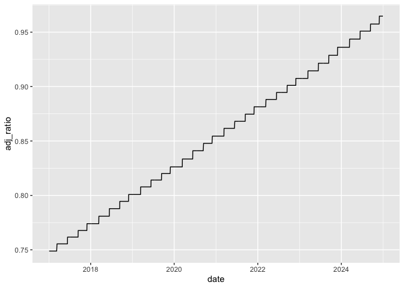
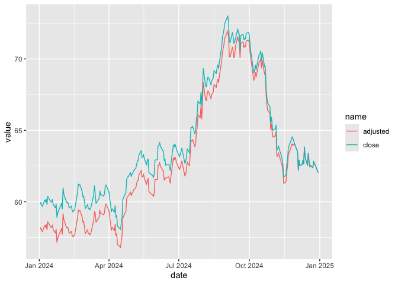

![]()
library(tidyquant)
library(tidyverse)
library(farr)
library(DBI)Stock returns on Yahoo Finance
Yahoo
finance
1 Summary
There appear to be few easy-to-use sources of free stock price data out there, but one venerable source is Yahoo Finance, which was a source of such data before Google was even a twinkle in the eye of Larry Page and Sergey Brin. So you may have used Yahoo Finance yourself to calculate stock returns. Yahoo Finance offers two versions of daily closing prices: close (“close price adjusted for splits”) and adjusted (“adjusted for splits and dividend and/or capital gain distributions”). If I denote close and adjusted on date \(t\) as \(c_t\) and \(a_t\), respectively, you likely calculated returns as
\[ r_t = \frac{a_t}{a_{t-1}} - 1 \] And denoting dividends (including capital gain distributions) on date \(t\) as \(d_t\), you likely figured that the above was equivalent to the standard formula:
\[ r_t = \frac{c_t + d_t}{c_{t-1}} - 1 \] But I have discovered that this is not true. Instead, the adjusted stock price is calculated so that returns are calculated using the following expression:
\[ r_t = \frac{a_t}{a_{t-1}} - 1 = \frac{c_t}{c_{t-1} - d_t} - 1 \] I’m guessing that many finance experts would regard the latter formula as simply wrong. Interestingly, Investopedia suggests that one adjusts stock prices for dividends in precisely the way implied by the Yahoo Finance calculation: that is, you adjust \(c_{t-1}\) by subtracting \(d_t\) from it.1 I’m inclined to label it as unorthodox rather than simply wrong. While the good news is that the differences are not large, I wonder how many realize that this is how Yahoo Finance is doing things.
In effect, the standard calculation assumes that you buy for cash at close one day and sell the next day, getting the proceeds of the sale and the associated dividends at that time. In contrast, the Yahoo Finance calculation assumes that you only need to supply cash to buy the shares at close one day net of dividends and sell the next day. The former seems a bit easier to describe and perhaps to pull off. Try asking your broker if you can do the latter! Of course, there’s a bit of fiction in all these calculations with trades at closing prices and dividends being paid on the ex-dividend date, but they are useful benchmark.
I think this case illustrates the reality that many data items are not well-documented and, even if they are, it makes sense to check that the data line up with the documentation.
2 Data analysis
Tip 1
In this note, I focus on the Coca-Cola Company (ticker symbol KO). While, in principle, I could download historical stock prices directly from https://finance.yahoo.com/quote/KO/history/, I find it easier to use tq_get() from the tidyquant package to get these prices.
ko_prices <- tq_get("KO", from = "2017-01-01", to = "2024-12-31")If we look at the data, we see the following:
ko_prices# A tibble: 2,011 × 8
symbol date open high low close volume adjusted
<chr> <date> <dbl> <dbl> <dbl> <dbl> <dbl> <dbl>
1 KO 2017-01-03 41.5 41.8 41.3 41.8 14711000 31.5
2 KO 2017-01-04 41.9 42.0 41.6 41.7 9959400 31.4
3 KO 2017-01-05 41.7 41.9 41.5 41.8 8968300 31.5
4 KO 2017-01-06 41.7 41.8 41.5 41.7 10246600 31.5
5 KO 2017-01-09 41.2 41.6 41.2 41.3 14822500 31.2
6 KO 2017-01-10 41.4 41.4 40.9 41.0 19706800 30.9
7 KO 2017-01-11 40.8 41.1 40.8 41.0 9266200 31.0
8 KO 2017-01-12 41.0 41.0 40.8 41.0 8541200 30.9
9 KO 2017-01-13 41 41.0 40.7 40.9 8123500 30.8
10 KO 2017-01-17 40.8 41.3 40.8 41.2 12469400 31.1
# ℹ 2,001 more rowsThe first thing to note is that we appear to have daily data. There are gaps in the data (e.g., where are 2017-01-07 and 2017-01-08?), but this can be explained by the fact that most stock exchanges do not trade on weekends, including the New York Stock Exchange (NYSE) on which Coca-Cola trades.
ko_prices |>
mutate(dow = wday(date, label = TRUE)) |>
count(dow)# A tibble: 5 × 2
dow n
<ord> <int>
1 Mon 375
2 Tue 413
3 Wed 411
4 Thu 407
5 Fri 405Having understood date, we can shift our attention to the other fields in ko_prices:
symbol: The stock’s ticker symbol. For non-US exchanges, this can differ from the ticker used by the exchange on which the stock is traded because a suffix is added to indicate the exchange (e.g.,.AXfor Australian stocks). Tickers are problematic firm identifiers because a firm’s ticker can change over time (much like a CUSIP) and also because tickers can be reused by different companies (unlike CUSIPs). More on firm identifiers can be found in Chapter 7 of Empirical Research in Accounting: Tools and Methods.open: The price at which the stock started trading when the market opened ondate.high: The highest price the stock reached during trading ondate.low: The lowest price the stock reached during trading ondate.close: The last price at which the stock was traded when the market closed fordate.volume: The total number of shares traded ondate.adjusted: The closing price adjusted for corporate actions such as dividends, stock splits, and other events to reflect the stock’s actual value over time.
Focusing on the two closing prices—close and adjusted—the natural first question is what does the word “adjusted” mean? As we have done before, we will use the data and our knowledge of the setting to infer the meaning of this word. Knowing what plots can reveal quickly, I start with Figure 1.
ko_prices |>
mutate(adj_ratio = adjusted / close) |>
ggplot(aes(x = date, y = adj_ratio)) +
geom_line()

adjusted to close over time
We can see a couple of things in Figure 1. First, the adj_ratio (defined as adjusted divided by close) equals one at the end of the period of our data set. Second, it appears that adj_ratio is a step function with respect to time: it is constant for periods, then steps up in discrete amounts on certain dates. This latter fact is consistent with “corporate actions such as dividends” occurring relatively infrequently on discrete dates.
In practice, the most common “corporate action” is the payment of dividends and we can get data on dividends using tq_get() with the argument get = "dividends".
ko_divs <- tq_get("KO", from = "2017-01-01", to = "2024-12-31",
get = "dividends")Here it seems that Coca-Cola pays quarterly dividends that can vary from one year to the next:
ko_divs |> arrange(desc(date)) # A tibble: 32 × 3
symbol date value
<chr> <date> <dbl>
1 KO 2024-11-29 0.485
2 KO 2024-09-13 0.485
3 KO 2024-06-14 0.485
4 KO 2024-03-14 0.485
5 KO 2023-11-30 0.46
6 KO 2023-09-14 0.46
7 KO 2023-06-15 0.46
8 KO 2023-03-16 0.46
9 KO 2022-11-30 0.44
10 KO 2022-09-15 0.44
# ℹ 22 more rowsIn the following code, I calculate adj_amt, which represents the amount of the dividend implied by the values in close and adjusted on a given trading day and the previous day.3
ko_rets <-
ko_prices |>
select(symbol, date, close, adjusted) |>
mutate(adj_ratio = adjusted / close) |>
group_by(symbol) |>
arrange(date) |>
mutate(lag_close = lag(close),
lag_adjusted = lag(adjusted)) |>
ungroup() |>
mutate(ret_yahoo = adjusted / lag_adjusted - 1,
adj_amt = round(lag_close - lag_adjusted / adj_ratio, 4)) |>
arrange(desc(date))As can be seen below, I have managed to recover precisely the amounts seen in ko_divs.
ko_rets |>
select(-symbol, -adj_ratio) |>
filter(adj_amt != 0) |>
head()# A tibble: 6 × 7
date close adjusted lag_close lag_adjusted ret_yahoo adj_amt
<date> <dbl> <dbl> <dbl> <dbl> <dbl> <dbl>
1 2024-11-29 64.08 62.24 64.43 62.11 0.002111 0.485
2 2024-09-13 71.41 68.84 71.23 68.20 0.009400 0.485
3 2024-06-14 62.55 59.89 62.99 59.85 0.0007198 0.485
4 2024-03-14 60.5 57.48 61.12 57.61 -0.002226 0.485
5 2023-11-30 58.44 55.08 58.23 54.45 0.01160 0.46
6 2023-09-14 58.46 54.67 58.44 54.22 0.008279 0.46 So this provides verification of the formula I used to calculate adj_amt. But where did this calculation come from?
To be honest, I played around with the numbers until my calculation of adj_amt equalled value in ko_divs. If I denote adj_ratio at time \(t\) as \(\alpha_t\), then my calculation implies
\[ d_t = c_{t-1} - \frac{a_{t-1}}{\alpha_t} \] Given that \(\alpha_t = \frac{a_t}{c_t}\), I can then show that this yields the expression provided in the introduction.
\[ \begin{aligned} d_t &= c_{t-1} - \frac{a_{t-1}}{\alpha_t} \\ d_t &= c_{t-1} - c_t \frac{a_{t-1}}{a_t} \\ c_t \frac{a_{t-1}}{a_t} &= c_{t-1} - d_t \\ \frac{a_{t-1}}{a_t} &= \frac{c_{t-1} - d_t}{c_t} \\ \frac{a_t}{a_{t-1}} &= \frac{c_t}{c_{t-1} - d_t} \\ \frac{a_t}{a_{t-1}} - 1 &= \frac{c_t}{c_{t-1} - d_t} - 1\\ \end{aligned} \]
I can verify this equation using the first row of data above. The left-hand side is already found in ko_rets as ret_yahoo, which was calculated by dividing 62.2436 by 62.1125 and subtracting one to get a percentage return of 0.2111%.
The right-hand side expression can be calculated using \(c_t = 64.08\), \(c_{t-1} = 64.43\), and \(d_t = 0.485\), to get 0.2111%. This confirms the equation in this case.
Using the standard formula gives a percentage return of 0.2095%. This confirms that the two calculations yield (slightly) different results.
2.1 Comparing with CRSP returns
The Center for Research in Security Prices, LLC (CRSP) is the de facto standard source of stock returns for US stocks in academic finance.4 I have a significant subset of CRSP in a repository of parquet files along the lines described in Appendix E of Empirical Research in Accounting: Tools and Methods.
Here I collect data from the CRSP daily stock file (crsp.dsf) for Coca-Cola and store it in crsp_rets_ko, a remote data frame.5
db <- dbConnect(duckdb::duckdb())
stocknames <- load_parquet(db, "stocknames", "crsp")
dsf <- load_parquet(db, "dsf", "crsp")
crsp_rets_ko <-
stocknames |>
filter(ticker == "KO") |>
distinct(permno) |>
inner_join(dsf, by = "permno") |>
select(permno, date, prc, ret)The standard measure of returns on CRSP is ret and I compare this with ret_yahoo (calculated using adjusted stock prices) and with ret_std, calculated using the “standard” formula discussed above. As can be seen below, the CRSP calculation (ret) and the standard formula (ret_std) line up pretty much perfectly.
crsp_rets_ko |>
inner_join(ko_rets, by = "date", copy = TRUE) |>
mutate(ret_std = (close + adj_amt) / lag_close - 1) |>
filter(adj_amt != 0) |>
select(date, ret_yahoo, ret_std, ret) |>
arrange(desc(date)) |>
collect()# A tibble: 32 × 4
date ret_yahoo ret_std ret
<date> <dbl> <dbl> <dbl>
1 2024-11-29 0.002111 0.002095 0.002095
2 2024-09-13 0.009400 0.009336 0.009336
3 2024-06-14 0.0007198 0.0007144 0.000714
4 2024-03-14 -0.002226 -0.002209 -0.002209
5 2023-11-30 0.01160 0.01151 0.01151
6 2023-09-14 0.008279 0.008214 0.008214
7 2023-06-15 0.01374 0.01364 0.01364
8 2023-03-16 0.005503 0.005461 0.005461
9 2022-11-30 0.02531 0.02513 0.02513
10 2022-09-15 -0.01359 -0.01349 -0.01349
# ℹ 22 more rows3 Creating an alternative version of adjusted
Can we create a version of adjusted that achieves the following desiderata?
- The final value of
closeequalsadjusted - Returns calculated using
adjustedmatch the “standard” approach
The answer is “yes” (of course).
I first create ko_prices_alt with adjusted modified in the necessary way. Note that I use window functions with the data sorted by desc(date) so that the time-series ends with close equal to adjusted and the adjustment ratio changes going back in time.
ko_prices_alt <-
ko_rets |>
arrange(desc(date)) |>
mutate(adj_ratio = coalesce(lag(cumprod(close / (close + adj_amt))), 1)) |>
mutate(adjusted = close * adj_ratio) |>
ungroup() |>
select(symbol, date, close, adjusted, adj_amt)I can then calculate returns and store them in ko_rets_alt.
ko_rets_alt <-
ko_prices_alt |>
group_by(symbol) |>
arrange(date) |>
mutate(ret_adj = adjusted / lag(adjusted) - 1) |>
ungroup() Finally, I focus on those dates where adj_amt is non-zero so that I can check that ret from CRSP equals ret_adj, the return calculated from adjusted in ko_prices_alt.
crsp_rets_ko |>
inner_join(ko_rets_alt, by = "date", copy = TRUE) |>
filter(adj_amt != 0) |>
select(date, ret_adj, ret) |>
arrange(desc(date)) |>
collect() # A tibble: 32 × 3
date ret_adj ret
<date> <dbl> <dbl>
1 2024-11-29 0.002095 0.002095
2 2024-09-13 0.009336 0.009336
3 2024-06-14 0.0007144 0.000714
4 2024-03-14 -0.002209 -0.002209
5 2023-11-30 0.01151 0.01151
6 2023-09-14 0.008214 0.008214
7 2023-06-15 0.01364 0.01364
8 2023-03-16 0.005461 0.005461
9 2022-11-30 0.02513 0.02513
10 2022-09-15 -0.01349 -0.01349
# ℹ 22 more rowsThus we see that the second desideratum is obtained. To see that we get the first, I create Figure 2, where it can be seen that the two lines converge by the end of the time-series.
ko_prices_alt |>
filter(year(date) >= 2024) |>
pivot_longer(cols = c(close, adjusted)) |>
ggplot(aes(x = date, y = value, color = name, line = name)) +
geom_line()

ko_prices_alt)
4 Glossary
Here is a small glossary of terms related to dividends.
- Dividend: A distribution made by a company to its shareholders, usually from profits, either in cash or additional shares. Cash dividends are generally expressed on a per-share basis (e.g., 50.4 cents per share) with all shareholders in a given class. Most companies have a single class of shares. For many firms with multiple classes of shares, the dividends paid are the same for all classes, but shares from different classes have different voting rights.
- Cum dividend: When a stock is purchased cum dividend, the purchaser gets the right to the upcoming dividend. If you buy the stock before the ex-dividend date, you will receive the associated dividend payment.
- Ex-dividend date: The first trading day on which a stock no longer carries the right to receive the previously declared dividend. If you buy the stock on or after the ex-dividend date, you will not receive the upcoming dividend.
- Record date: The date when the company checks its books to determine who the dividend should be paid to. Due to stock exchange settlement rules, you must buy the stock before the ex-dividend date to receive the dividend.
- Payment date: The date when the dividend is actually paid to shareholders.
Footnotes
This approach to calculating adjusted stock price works only on the day the ex-dividend date when the previous values of
closeandadjustedare equal.↩︎Execute
install.packages(c("tidyquant", "tidyverse", "farr", "DBI", "duckdb", "dbplyr")within R to install all the packages you need to run the code in this note.↩︎Note that I use
round(., 4)to eliminate quirky issues related to less-significant digits with double-precision numbers.↩︎See Section 7.2 of Empirical Research in Accounting: Tools and Methods for more on CRSP.↩︎
For more on remote data frames see Chapter 6 of Empirical Research in Accounting: Tools and Methods.↩︎